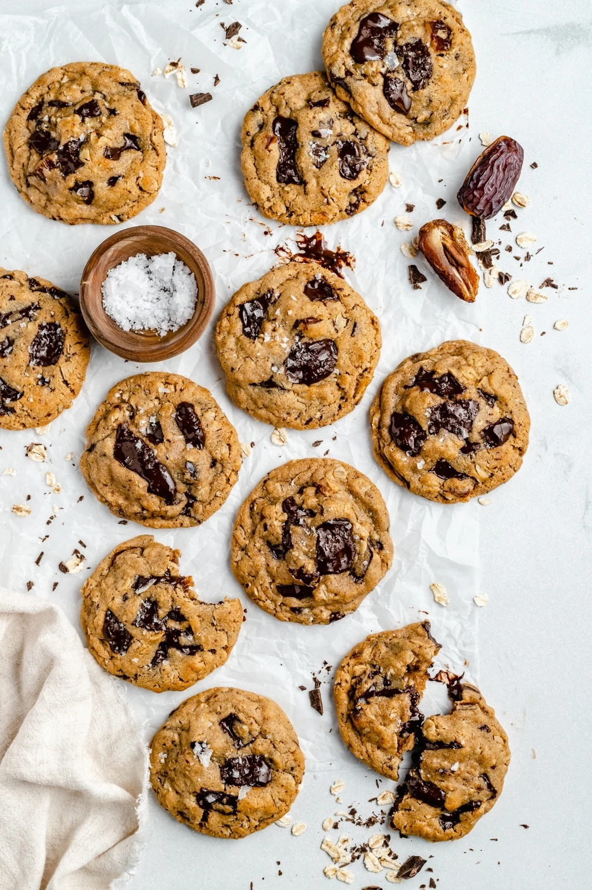

Espresso tahini cookiesh

Description
Små goda kakor.
Ingredients
- 45 g kokosolja
- 1/2 dl tahini
- 1 msk espressopulver
- 125 g strösocker
- 50 g ljust muscovadosocker
- 175 g vetemjöl
- 1/2 tsk bikarbonat
- 1/4 tsk salt
- 125 g mörk choklad
Steps
- Smält kokosoljan, blanda med tahini, havredryck, vanilj och espressopulver tills kaffet lösts upp.
- Blanda mjöl, bikarbonat och salt. Tillsätt till tahiniblandningen och blanda. Låt stå i kyl i 15 min.
- Grädda kakorna i mitten av ugnen (175).